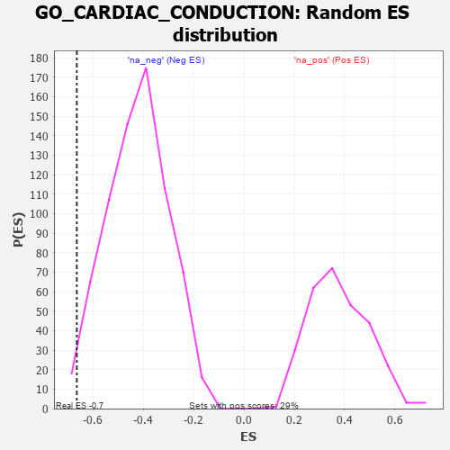

| | | Dataset | 7d |
| Phenotype | NoPhenotypeAvailable |
| Upregulated in class | na_neg |
| GeneSet | GO_CARDIAC_CONDUCTION |
| Enrichment Score (ES) | -0.664521 |
| Normalized Enrichment Score (NES) | -1.5644659 |
| Nominal p-value | 0.02253521 |
| FDR q-value | 0.12530008 |
| FWER p-Value | 1.0 |
Table: GSEA Results Summary
 Fig 1: Enrichment plot: GO_CARDIAC_CONDUCTION
Fig 1: Enrichment plot: GO_CARDIAC_CONDUCTION
Profile of the Running ES Score & Positions of GeneSet Members on the Rank Ordered List
| PROBE | GENE SYMBOL | GENE_TITLE | RANK IN GENE LIST | RANK METRIC SCORE | RUNNING ES | CORE ENRICHMENT | | 1 | KCND2 | | | 617 | 0.590 | -0.0326 | No |
| 2 | KCNK1 | | | 3413 | 0.088 | -0.3771 | No |
| 3 | MEF2A | | | 4499 | -0.095 | -0.5063 | No |
| 4 | ITPR1 | | | 4661 | -0.130 | -0.5166 | No |
| 5 | ITPR3 | | | 5361 | -0.288 | -0.5825 | No |
| 6 | KCNQ1 | | | 5918 | -0.441 | -0.6188 | Yes |
| 7 | KCNH6 | | | 5988 | -0.467 | -0.5919 | Yes |
| 8 | STIM1 | | | 6169 | -0.528 | -0.5743 | Yes |
| 9 | TRPM4 | | | 6390 | -0.612 | -0.5553 | Yes |
| 10 | HCN4 | | | 7260 | -1.134 | -0.5781 | Yes |
| 11 | ANK2 | | | 7298 | -1.170 | -0.4936 | Yes |
| 12 | CALM1 | | | 7567 | -1.499 | -0.4130 | Yes |
| 13 | KCNN2 | | | 7629 | -1.611 | -0.2978 | Yes |
| 14 | PDE4D | | | 7764 | -1.944 | -0.1666 | Yes |
| 15 | CALM3 | | | 7869 | -2.525 | 0.0128 | Yes |
Table: GSEA details [plain text format]

Fig 2: GO_CARDIAC_CONDUCTION: Random ES distribution
Gene set null distribution of ES for GO_CARDIAC_CONDUCTION